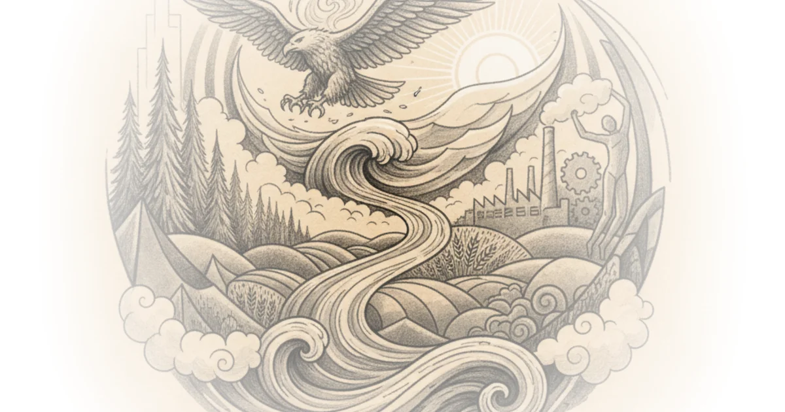

Yale University reframes America's most beloved folk anthem not as a simple celebration of national unity, but as a radical artifact of labor protest and anti-fascist resistance. By tracing the arc from the technological hubris of the 1920s to the cascading failures of the Great Depression, the lecture reveals how the New Deal was not merely a policy shift, but a fundamental reconstruction of the relationship between the citizen and the state.
The Myth of the Solved Economy
The lecture opens by dismantling the nostalgic view of the 1920s. Yale University notes that while Woody Guthrie's "This Land Is Your Land" is often sung in preschools as a heroic anthem, "it's also a song that comes out of what we're going to be talking about today, which is the landscape of the New Deal and the Great Depression, particularly the protest politics that emerged during that era." This context is crucial; it reminds listeners that the song's optimism was forged in the fires of the labor movement and the orbit of the Communist Party, not in a vacuum of prosperity.

The author then pivots to the 1920s, describing a decade where technology and consumerism created a false sense of security. Yale University writes, "The practice of democracy has turned a corner. He wrote a revolution is taking place infinitely more significant than any shifting of economic power." The lecture argues that figures like Walter Lippmann saw the shift toward mass media and consumer identity, but underestimated the fragility of the economic model built upon it. The core of the argument is that the era's defining belief—that the U.S. had "figured out modernity"—was a dangerous illusion. As Yale University puts it, "The chief business of the American people is business. They are profoundly concerned with producing, buying, selling, investing and prospering in the world."
This framing is effective because it exposes the disconnect between political rhetoric and statistical reality. The lecture points out that while Calvin Coolidge declared the end of economic conflict, "the 1920s are a period of rapidly expanding economic inequality... in which concentrations of wealth among the top 1%... reach a peak that they had never seen before." Critics might note that this focus on inequality risks oversimplifying the genuine, albeit uneven, rise in living standards for the middle class during the decade. However, the lecture's insistence on the volatility of this boom sets the stage perfectly for the coming collapse.
The old political struggles are over and that the American citizen's first importance to his country is no longer that of a citizen of a political participant but that of a consumer.
The Architecture of Collapse
When the crash arrives, Yale University treats it not as a singular event, but as the convergence of multiple systemic failures. The lecture moves beyond the stock market to detail a "cascading series of banking failures" and an "environmental crisis in the years of the late 20s and into the 30s, most famously the dust bowl." By linking the financial crash to the Dust Bowl and the collapse of sharecropping, the author illustrates a crisis of legitimacy that hit every stratum of society.
The evidence presented is stark: "At its peak, the unemployment rate during the Great Depression in 1932 was about 25%. In some cities, New York, Chicago, among industrial workers, the rate got as high as 60, even 70%." This data underscores the sheer scale of the trauma, transforming the Depression from a historical abstraction into a lived catastrophe. The lecture argues that this mass unemployment was not just an economic metric but a psychological breaking point that "upends American politics" and forces a reimagining of the government's role.
The narrative effectively connects the failure of the "consumer citizen" model of the 1920s to the necessity of the New Deal. Yale University writes, "This is a moment that upends American politics. It upends political coalitions and it recreates those parties a new." The argument holds up well here, as it avoids the trap of viewing the New Deal as a sudden, top-down gift from Franklin Roosevelt, instead presenting it as a response to a total systemic failure that demanded a new social contract.
The Question of Agency
As the lecture transitions to the New Deal itself, it poses the essential historical question: who actually made it happen? Yale University suggests that historians often debate whether the New Deal was "an extension of the ideas of the progressive era... or whether it is something radically different." The author sets up a tension between the "top-down enterprise" of Ivy League advisers and the "social mobilizations" of the labor movement.
This is the most nuanced part of the coverage. By highlighting the labor movement as "the great mobilization of the 1930s that really captures something new and different about the new deal spirit," the lecture pushes back against the "Great Man" theory of history. It suggests that the New Deal was as much a product of mass pressure from below as it was of presidential decree. A counterargument worth considering is that the lecture may understate the role of international pressures, such as the rise of fascism in Europe, which also shaped the urgency of American domestic policy. Nevertheless, the focus on domestic mobilization provides a compelling, grounded explanation for the era's radical shift.
Bottom Line
Yale University's strongest move is reframing the New Deal not as a bureaucratic fix, but as a necessary response to the total collapse of the 1920s consumerist myth. The lecture's biggest vulnerability is its reliance on a transcript format that occasionally obscures the visual evidence of the slides, but the verbal analysis of the interlocking crises remains powerful. Readers should watch for how the tension between top-down policy and bottom-up mobilization continues to define American political struggles today.